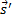
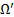

| Volume 1, Year 2014 - Pages 38-42 | View PDF (Full-text) |
| DOI: 10.11159/jffhmt.2014.006 | Linked References |
| ISSN: 2368-6111 | |
Numerical Analysis of Heat Transfer Performance of Flat Plate Solar Collectors
E. Ekramian, S.Gh. Etemad, M. Haghshenasfard*
Department of Chemical Engineering, Isfahan University of technology, 84156-83111, Isfahan, Iran
haghshenas@cc.iut.ac.ir
Abstract- In this study, numerical analysis was used to investigate the effect of different parameters on thermal efficiency of flat plate solar collectors. Various geometries were examined in order to assess the influence of geometrical characteristics and operating conditions on thermal efficiency of solar collectors. Important parameters such as absorber thickness, riser position, shape of tube cross section, absorber material, absorber absorptivity, glass transmissivity, and mass flow rate have been investigated. Results show that the efficiency of collector with risers on top of the absorber plate is 4.2% more than that of the collector with risers on bottom. Also the tube cross-sectional geometry shows strong effect on the efficiency e.g. the efficiency of collectors with circular tubes is 38.4% more than that of collectors with triangular cross sections. Thermal efficiency of solar collectors increases with increasing the fluid flow rate, plate absorptivity, absorber thickness, and glass transmissivity.
Keywords:Solar energy, Flat plate solar collector, Thermal performance, Computational fluid dynamics (CFD).
© Copyright 2014 Authors - This is an Open Access article published under the Creative Commons Attribution License terms. Unrestricted use, distribution, and reproduction in any medium are permitted, provided the original work is properly cited.
Date Received: 2014-02-05
Date Accepted: 2014-10-02
Date Published: 2014-10-14
Nomenclature
a = absorption coefficient (dimensionless)
Ac = collector absorption area (m2)
Cp =heat capacity (J/kg-K)
gz = components of gravitational accelerationin z direction ((m/s2)
GT = total global solar radiation (W/m2)
I = radiation intensity (W/m2)
k = thermal conductivity (W/m-K)
= mass flow rate of fluid flow (kg/s)
n = refractive index (dimensionless)
P = pressure (Pa)
Qu = rate of useful energy gained (W)
= position vector (m)
= direction vector (m)
s = path length (m)
 = scattering direction vector (m)
t = time (s)
T = local temperature (K)
To = outlet temperature (K)
Ti = inlet fluid temperature (K)
u = velocity in x direction (m/s)
v = velocity in y direction (m/s)
w = velocity in z direction (m/s)
ρ = density (kg/m3)
µ = viscosity (Pa.s)
ε = collector efficiency (dimensionless)
σs = scattering coefficient (dimensionless)
σ = Stefan-Boltzmann constant (5.669 * 10-8 W/m2-K4)
φ = phase function (dimensionless)
solid angle (dimensionless)
1. Introduction
Interest in solar energy has been growing in recent years and is considered one of the main promising alternative sources of energy to replace the fossil energy resources [1-2]. Solar water heating systems are one of the major applications of solar energy and can be used for various purposes, such as heating in apartments, family houses, schools, agricultural farms, hospitals, restaurants and different industries. Solar water heating systems, in some cases, can decrease indoor water heating costs within 70% [3].
In a solar collector, the solar energy is transferred to a fluid medium. The most common and popular kind of solar collectors is flat plate type. Flat plate solar collectors are more simple, reliable and with relatively low price than the other types of collectors [4]. Gunnewiek et al. [5-6] investigated flow distribution in unglazed transpired plate collectors using TASC Flow-CFD code. It is shown that the air flow through the collector surface is non-uniform due to the buoyancy effects.
Numerical models based on CFD models were presented by Gadi [7]. In that work, the CFD transient predictions were verified using indoor testing employing a solar simulator.
Experimental and numerical studies of heat transfer in an integrated collector storage solar water heater (ICSSWH) were performed by Gertzos et al. [8]. In their investigation a 3-D (CFD) model was defined and validated with experimental results taken by a Laser Doppler Velocimetry (LDV) system.
Flow distribution and temperature profile through a solar collector under different operating conditions was investigated by Fan et al. [9]. Effects of some important parameters such as properties of working fluid, flow rate, inlet temperature and collector tilt angle on the solar collector performance were studied. They found that the flow distribution through the absorber tubes is uniform under high mass flow rates.
A numerical study for investigation of a flat plate solar energy collector was reported by Selmi et al. [3]. CFD-ACE software was employed to solve the equations of fluid flow, heat transfer and radiation. The results showed that the predicted temperature profile has the same trend as that of the experimental one. Good agreement between the CFD results and experimental data indicated that the CFD is a valuable tool to predict the performance of the solar collectors.
A novel polymer solar collector was investigated by Martinopoulos et al. [10]. In their study the effects of operating parameters on the velocity and temperature profiles, solar irradiation, and heat transfer in the circulating fluid through the collector were investigated using CFD analysis.
Al-Ansary and Zeitoun [11] investigated the parabolic trough collectors using CFD simulation. Numerical modeling was used for calculation of conduction and convection heat losses from the receiver of the collector. Effect of insulating of solar collector on the heat loss was studied and the numerical results showed that the insulation can reduce the overall heat loss significantly.
Sultana et al. [12] investigated the thermal performance of a solar micro-concentrating collector by optimizing of design to maximize the overall thermal efficiency. Commercial CFD software, ANSYS-CFX, was used to predict heat loss mechanisms, radiation, and convection heat transfer inside the collector.
Akhtar and Mullick [13] developed numerical methods for investigation of thermal performance of single and double-glazed solar collectors. The effects of absorption of solar radiation on convective and radiative heat transfer coefficients were studied and the inner and outer surface temperatures of the glass covers were calculated.
Experimental and numerical studies were performed by Dovic and Andrassy [14] in order to improve the thermal efficiency of the solar plate collectors. Effects of geometrical and operating parameters on thermal efficiency of solar collectors were investigated and the results showed that no noticeable increase of efficiency could be achieved by changing the distance between absorber and glazing.
Based on the results on the available literature, there is a lack of information on the effect of various operating and geometrical parameters on the overall performance of solar collector. Therefore, it was decided to perform a comprehensive numerical study on a flat plate solar collector and investigate on improvement of thermal efficiency. The aim of this work is to study the effect of operating and design parameters on the efficiency of flat plate solar collectors using control volume based numerical method. Effects of geometrical and radiation characteristics of absorber, tubes, and glass cover were considered. The commercial ANSYS FLUENT software was used to solve numerically the fluid flow, heat transfer, and radiation equations. Results were validated with the experimental data reported by Cruz-Peragon et al. [15].
2. Theoretical Basis
Forced convection heat transfer is encountered on the front surface of flat plate solar collector; also wind induced heat losses have a significant effect on the efficiency of solar collectors [16].
The performance of a flat plate solar collector is influenced by the thermal losses from the absorber to the ambient via the glass covers [17-18]. For investigation of thermal performance of a solar collector, the equations of fluid flow, heat transfer, and radiation should be considered.
The laminar, incompressible, three dimensional and steady constant-properties viscous Newtonian flow inside a solar collector is governed by the usual continuity, momentum and energy equations. For the above assumptions, the continuity equation may be written as:
he momentum equations in x, y and z directions can be written as:
The energy equations for fluid and the frame of collector are as following:
The discrete ordinate (DO) model activated for radiation model of heat transfer between the absorber, glass and casing walls. DO model solves the radiative transport equation (RTE) for a finite number of directions . RTE of an absorbing, emitting and scattering medium can be written for the arbitrary position in a domain in the direction . Eq. (7) shows the radiative transfer equation (RTE) for an absorbing, emitting, and scattering medium in DO model.
Among other radiation models available in Fluent [19], the DO model was shown to be the most comprehensive, allowing modeling at various wave lengths and optical lengths, with moderate demands on CPU and memory as well as with a moderate computational time.
The instantaneous collector efficiency relates the useful energy to the total radiation incident on the collector surface by:
The performance relation, Eq. (8), assumes that the sun is perpendicular to the absorber plate of the collector, which infrequently occurs.
3. Numerical investigations
3-D numerical investigations of the solar flat plate collectors were performed by CFD technique and the governing equations were solved using the commercial ANSYS FLUENT software version 14.
In this case, the models of mixed radiation heat transfer and convection between the glass cover and side walls with surrounding, conduction heat transfer in glass cover, insulating base of the collector and conduction between the absorber plate and tubes were considered. The absorbed solar energy was simulated by setting the value of direct solar irradiance to 800 W/m2 that uniformly distributed over the absorber plate.
3.1. Computational Domain
Steady state simulations are carried out with a 2 m2 flat plate solar collector panel. The geometrical dimensions are shown in Table 1.
| Specification | Detail |
| External Dimension | 2000 x 1000 x 95 mm |
| Riser tubes material | Copper |
| Quantity | 9 tubes, 12.5 mm diameter |
| Absorber Absorptivity | 0.96 |
| Absorber Emissivity | 0.05 |
| Glass | 4 mm |
| Glass Transmissivity | 0.92 |
| Air gap spacing between absorber and glass | 25 mm |
Due to the large difference in the dimension of absorber tube length (2 m) and tube hydraulic diameter (0.0125 m), a very fine grid distribution is needed in the cross-section of the tube. Therefore, some assumptions on computational domain were carried out as follow:
- Radiation loss from margins of collector was neglected.
- Flow rate in all riser tubes is constant and fluid is divided equally in all risers in collector.
- The heat loss from bottom surface of collector was ignored
- Since the flow field is symmetric with respect to y-z plane, only one half of the riser tube and absorber plate has been considered for simulation.
The computational domain is shown in Fig. 1.
A commercial mesh generator, Gambit 2.2.3, was used to generate the grids. Fig.2 shows the computational domain and grid setup of the model.
Eight different numbers of computational grids were tested and the temperature differences between inlet and outlet were obtained. The results are presented in Fig.3. It is observed that a further refinement of grids from 150000 to 450000 did not have a significant effect on the temperature differences. Therefore, the grid generation with 150000 grids was considered as a computational domain.
The boundary conditions were defined as:
1- At the inlet, the "velocity inlet" was used and the mass flow rate of the fluid was specified.
2- At outlet, the "outflow" condition was applied.
3- "Symmetry" condition was assumed on the wall in middle of riser tube
4- At the walls, no-slip boundary condition was imposed. The "shell conduction" option was enabled for absorber and riser tube to compute heat conduction within the wall. The "semi-transparent" option was enabled for glass cover to transmit radiation into the collector area and the "opaque" option was enabled for other surfaces.
The governing equations were solved using the finite volume technique. Steady pressure based solver was used with second order upwind scheme for convective terms in the momentum and energy equations. For pressure discretization, the standard scheme was employed while the SIMPLE algorithm was used for pressure-velocity coupling discretization.
4. Results and Discussion
4.1. Validation of the CFD Model
Numerical results were verified with the experimental data reported by Cruz-Peragon et al. [15]. For this case, the solar collector involves 15 riser tubes. Solar incident radiation is 936.8 W/m2. Water flow rate, water inlet temperature, and ambient temperature are 6.42 kg/hr,31˚C and 23.2 ˚C respectively. Thickness of the absorber and glass cover are 2mm and 4mm respectively. Inner diameter of risers is 10 mm and distance between risers is 30 mm with 450 mm of riser's length.
Based on flow distribution in the risers given in Cruz-Peragon et al. [15], the flow rate percentage in the riser 1 is 4.65%. So the riser 1 was considered and the average fluid temperature was obtained in four sections through the system. Fig. 4 shows the comparison between the experimental data and the present numerical predictions.
The numerical results of the present investigation show a good agreement with the experimental data, indicating the accuracy of the numerical model. The average relative error between the experimental data and numerical results is about 5.5%.
A sample of temperature distribution and velocity vectors in a 2-D cut of simulated collector are shown in Figs. 5.
Fig. 5 (a) shows the heat transfers from absorber to riser tube by conduction and convection mechanisms. It can be found from Fig. 5 (b) that the natural convection is created around the riser due to the air flow in a gap of 25 mm. Similar behavior is reported by Subiantoro and Ooi [4].
4.2. Effect of Riser Position on the Thermal Efficiency
In order to investigate the influence of riser position, various models with different positions of risers related to the absorber were investigated. In models (a, b), the riser tube is attached to the top surface of the absorber plate, in model (c) the riser is located in middle of absorber, in models (d, e) the riser is attached to the bottom surface of the absorber. Fig.6 shows the schematic diagram of the risers.
These five configurations were simulated under constant Reynolds number, inlet fluid temperature, and solar radiation. Fig. 7 shows the thermal performance of the various models.
Numerical results show that by changing riser's position from top to bottom surface of the absorber plate, the efficiency of the collector decreases. The collector with risers on top of the absorber plate (model a) is 4.2% more efficient than collector with risers on bottom of the absorber plate (model e) because for configuration (a) more collectors surface is available for heat transfer.
4.3. Effect of Riser Shape on the Thermal Efficiency
For investigation on the effect of noncircular riser tubes on the heat transfer in flat plate solar collectors, four models with different riser shapes were purposed. The collectors with triangular, square, hexagonal and circular shape riser tubes were considered as shown in Fig.8.
The efficiency of collector with circular and noncircular riser tubes was studied and results are presented in Fig.9. These simulations were performed under the 0.02 kg/s of fluid mass flow rate.
Fig.9 shows that collector with circular riser tube (model c) is the most efficient collector type. In fact by increasing the cross-sectional sharp corners the collector efficiency decreases. This is due to the fact that convection heat transfer is very weak for the channels with sharp corners. The collectors with circular riser tubes, have 38.4%, 11.2%, and 6.6% more efficiency than those of the collectors with triangular, square, and hexagonal riser tubes, respectively.
4.4. Effect of Mass Flow Rate on Thermal Efficiency
To investigate on flow rate effects, model (a) was considered with flow rate of 0.02-0.05 kg/s. Fig.10 presents the variations of collector efficiency versus the reduced temperature parameters, (Ti-Ta)/G, for different mass flow rates. As shown in Fig. 10 by increasing the fluid flow rate from 0.02 to 0.05 kg/s, the collector efficiency increases by 8.2%. Also it can be found that increasing reduced temperature parameter from 0.0025 to 0.0075 yielded 6% decrease of the efficiency and this trend was already reported by Yousefi et al. [20].
4.5. Effect of Absorber Thickness on the Thermal Efficiency
Effect of absorber thickness on collector efficiency was studied and the results are shown in Fig.11. The simulations were performed for 0.05 kg/s of mass flow rate and 0.0025 of reduced temperature parameter. Based on the results, the collector efficiency increases by increasing the absorber thickness, e.g. by increasing the thickness from 0.1mm to 0.6 mm, the efficiency increases up to 15%, which is due to the lower heat transfer resistance for the absorber with higher thickness.
4.6. Effect of Absorber Material on Thermal Efficiency
One of the most important sections in a solar flat plate collector is absorber plate, which absorbs the solar radiation and transfers heat to the risers and fluid medium. Therefore, the material properties of absorber plate play an important role in conduction heat transfer from the absorber to the riser tubes.
Within this study, different absorber plates of copper, aluminum and steel with various thermal conductivities were used and results are demonstrated in Fig.12. As shown in this figure, by increasing the absorber conductivity, the collector efficiency increases.
Efficiency of copper absorber is 3.4% and 35% higher than those of the aluminum and steel absorber plates respectively.
4.7. Effect of Absorber Absorptivity and Glass Cover Transmissivity on Thermal Efficiency
In order to examine the effect of absorber absorptivity, collectors with different absorptivity were considered and the calculated results are shown in Fig.13. Results indicate that by increasing the absorber absorptivity, the collector efficiency increases linearly. By increasing the absorptivity from 0.8 to 0.98, the collector efficiency increases up to 4.2%.
Glass cover transmissivity is an important parameter affecting collector efficiency. In the present investigation simulations were carried out with different glass transmissivities and the results are presented in Fig.14. The results indicate that as the transmissivity increases the radiation to inside area of collector enhances, which results in better heat transfer performance of the solar collector. For instance by increasing the transmissivity from 0.82 to 0.96, the collector efficiency increases by 16.9%.
5. Conclusion
A 3-D numerical simulation was carried out to investigate about the efficiency of a flat plate solar collector. Various geometries and operating conditions were examined in order to assess the influence of riser position, shape of tube area section, mass flow rate, absorber thickness, absorber material, absorber absorptivity, and glass transmissivity on thermal efficiency of solar collectors. The commercial ANSYS FLUENT software was used to solve numerically fluid flow, heat transfer, and radiation equations. Results were verified through the comparison with the available experimental data in the literature.
The results showed that the collector with risers on top of the absorber plate is 4.2% more efficient than collector with risers on bottom of the absorber plate. Also the collectors with circular riser tubes have more efficiency than those of the collectors with non-circular cross sectional tubes. In addition, thermal efficiency of solar collectors increases with increasing the absorber conductivity, fluid flow rate, plate absorptivity, absorber thickness, and glass transmissivity.
References
[1] Banos, R., Manzano-Agugliaro, F., Montoya, FG., Gil, C., Alcayde, A., Gomez, J., (2011). Optimization methods applied to renewable and sustainable energy. Renewable & Sustainable Energy Reviews 15, 1753-1766. View Article
[2] Ssen, Z., 2004. Solar energy in progress and future research trends. Progress in Energy and Combustion Science 30, 367-416. View Article
[3] Selmi, M., Al-Khawaja, M.J., Marafia, A., (2008). Validation of CFD simulation for flat plate solar energy collector. Renewable Energy 33, 383-387. View Article
[4] Subiantoro, A., Ooi, K.T., (2013). Analytical models for the computation and optimization of single and double glazing flat plate solar collectors with normal and small air gap spacing. Applied Energy 104, 392-399. View Article
[5] Gunnewiek, L.H., Brundrett, E., Hollands, G.T.,( 1996). Flow distribution in unglazed transpired plate solar air heaters of large area. Solar Energy 58, 227-237. View Article
[6] Gunnewiek, L.H., Hollands, K.G.T., Brundrett, E., (2002). Effect of wind on flow distribution in unglazed transpired plate collectors. Solar Energy 72, 317-325. View Article
[7] Gadi, M.B., (2000). Design and simulation of a new energy-conscious system (CFD and solar simulation). Applied Energy 65, 251-256. View Article
[8] Gertzos, K.P., Pnevmatikakis, S.E., Caouris, Y.G., (2008). Experimental and numerical study of heat transfer phenomena, inside a flat-plate integrated collector storage solar water heater (ICSSWH), with indirect heat withdrawal. Energy Conversion and Management 49, 3104-3115. View Article
[9] Fan, J., Shah, L.J., Furbo, S., (2007). Flow distribution in a solar collector panel with horizontally inclined absorber strips. Solar Energy 81, 1501-1511. View Article
[10] Martinopoulos, G., Missirlis, D., Tsilingiridis, G., Yakinthos, K., Kyriakis, N., (2010). CFD modeling of a polymer solar collector. Renewable Energy 35, 499-1508. View Article
[11] Al-Ansary, H., Zeitoun, O., (2011). Numerical study of conduction and convection heat losses from a half-insulated air-filled annulus of the receiver of a parabolic trough collector. Solar Energy 85, 3036-3045. View Article
[12] Sultana, T., Morrison, G.L., Rosengarten, G., (2012). Thermal performance of a novel rooftop solar micro-concentrating collector. Solar Energy 86, 1992-2000. View Article
[13] Akhtar, N., Mullick, S.C., (2012). Effect of absorption of solar radiation in glass-cover(s) on heat transfer coefficients in upward heat flow in single and double glazed flat-plate collectors. International Journal of Heat and Mass Transfer 55, 125-132. View Article
[14] Dovic, D., Andrassy, M., (2012). Numerically assisted analysis of flat and corrugated plate solar collectors thermal performances. Solar Energy 86, 2416-2431. View Article
[15] Cruz-Peragon, F., Palomar, J.M., Casanovab, P.J., Dorado, M.P., Manzano-Agugliaro, F., (2012). Characterization of solar flat plate collectors. Renewable and Sustainable Energy Reviews 16, 1709- 1720. View Article
[16] Turgut, O., Onur, N., (2009). Three dimensional numerical and experimental study of forced convection heat transfer on solar collector surface. International Communications in Heat and Mass Transfer 36, 274-279. View Article
[17] Vestlund, J., Dalenback, J., Ronnelid, M., (2012). Thermal and mechanical performance of sealed, gas-filled, flat plate solar collectors. Solar Energy 86, 13-25. View Article
[18] Kumar, S., Mullick, S.C., (2010). Wind heat transfer coefficient in solar collectors in outdoor conditions. Solar Energy 84, 956-963. View Article
[19] Fluent Inc, (2011). Fluent Release 14.0, USA.
[20] Yousefi, T., Veisy, F., Shojaeizadeh, E., Zinadini, S., (2012). An experimental investigation on the effect of MWCNT-H2O nanofluid on the efficiency of flat-plate solar collectors. Experimental Thermal and Fluid Science 39, 207-212. View Article